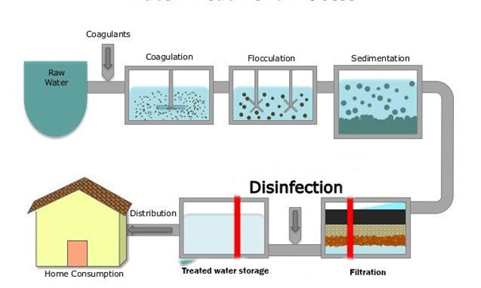
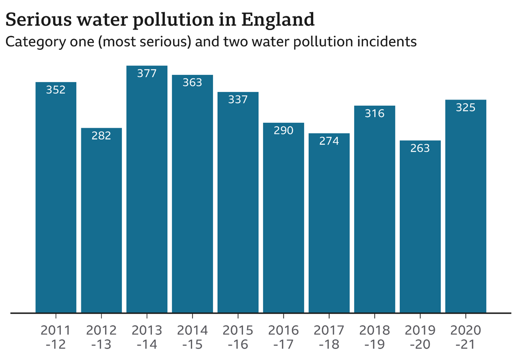

Water is one of the worlds most important substances.
Being used everywhere from public consumption to agricultural use and industrial processes, it is essential it is treated and safe for sufficient use.
How is this water treated and what methods are used? This article will explain the engineering behind water treatment.
Although technological advancements increase in water treatment, this article also covers ongoing challenges and difficulties, particularly in lower income countries.
Introduction
Water treatment is a vital process that guarantees safe and clean water which can be used in a variety of ways such as:
drinking, industrial purposes, agricultural use, sanitation and many more.
Despite water covering 75% of the Earth’s surface, less than 1% of Earth's water is drinkable (John Misachi, 2018).
It’s clear that safe water is limited.
Water treatment is a critical process to ensure water is free from pathogens, chemicals and contaminants, make it safe for consumption or and different uses.
This article will cover the importance of water treatment, the processes used in water treatment and challenges in providing clean water.
The importance of Water Treatment
What is water treatment? Water treatment refers to the process of improving quality of water with the purpose of serving an end-use (SafetyCulture Content Team, 2024).
Clean drinking water is a basic human right and access to it is critical for public health.
Although being a basic human right the World Health Organization (WHO) and UNICEF states that
2.2 billion people around the world do not have safely managed drinking water (World Health Organization, 2019).
This means that around 1 in 3 people globally do not have access to clean drinking water which is saddening especially with the technological advancements
and every growing knowledge we have today.
We know untreated water can harbour harmful microorganisms such as viruses or bacteria which cause harmful diseases such as cholera.
Moreover, water treatment is vital for environmental protection.
Untreated sewage and industrial waste are leading factors in contaminating water bodies,
this leads to pollution and degrades ecosystems, harming many different species and ruining many habitats.
Effective water treatment prevents contaminants entering and destroying natural habitats, maintaining biodiversity.
The Water Treatment Process
There are many different stages within the water treatment process and each stage is designed to move specific types of contaminants.
The 5 major stages are: Coagulation, Flocculation, Sedimentation, Filtration and Disinfection. (SafetyCulture Content Team, 2024).
1.Coagulation: A coagulant (usually aluminium sulfate) is quickly added to water and mixed. The coagulant (being positively charged) neutralises the negative
charged contaminants (usually natural organic matter like gravel and sand) causing them to clump together which forms larger particles (known as flocs).
(Brian Campbell, 2022).
2.Flocculation: Flocculants (usually polyacrylamides in water treatment) added to water and mixed after coagulation.
Flocculants bind the small particles that were neutralised by coagulants together. Flocs then settle to the bottom of the tank to be filtered out of the water.
(ChemREADY, no date).
3.Sedimentation: Once flocs form, they settle to the bottom of the water as they are heavier.
This separates the solids from the water. (SafetyCulture Content Team, 2024).
4.Filtration: The now separated, clear water on top passes through filters with various pore sizes, made from a variety of materials such as sand and gravel.
The filters help remove dissolved particles and unwanted substances from the water. (SafetyCulture Content Team, 2024).
5.Disinfection: Chemical disinfectants are added to water such as chlorine or chlorine dioxide.
The chemical disinfectants remove any final remaining parasites, bacteria or viruses.
Water treatment plants do this to keep water safe when traveling from thw water treatment
plabt to homes and other places. The chemical disinfectants help destroy remaining unwanted
microorganimes before water reaches its intended use. (SafetyCulture Content Team, 2024).
Figure 1 below outlines the steps:

(Gaurab Karki, 2018)
Challenges in Water Treatment
Despite the technological advancements and our ever-growing knowledge in water treatment, many challenges remain in providing access to clean water globally.
The predominant challenge being population growth. Demand for freshwater continues to increase due to the growing population,
UNICEF states that half of the world’s population could be living in areas facing water scarcity by as early as 2025 (UNICEF, no date).
An increase in demand puts more pressure on water resources and treatment centres.
Another detrimental challenge is contaminants being present in water sources due to emerging pollutants. Examples such as:
chemicals, drugs and personal care products are difficult to remove with conventional water treatment methods as they have complex structures.
Water sources are also polluted in many developing countries due to a lack of investment in water treatment systems,
as a result water sources are ridden with bacteria and viruses.
Hosting many diseases, these water sources are unsafe and can cause death if drank.
Water pollution is a serious issue, figure 2 below illustrates water pollution incidents from years 2011-2021 in England.
Figure 2:

(Rob England, 2021)
Lastly, cost is an important issue. The cost of water treatment can be restrictive especially for developing countries.
Both construction and maintenance of water treatment plants require a steep financial investment, which can prevent providing poor regions with clean water.
Conclusion
Water treatment is crucial for public health, protecting the environment and ensuring access to clean water for all.
Although significant technological advancements have been made, challenges still exist which prevent the access of clean water.
Chemicals, industrial waste and personal care products are all pollutants and prevent water treatment.
The expensive cost limit developing countries from developing water treatment plants.
Although many challenges remain new advancements provide cheaper and more efficient alternatives.
Water treatment is extremely important for the health of this world.